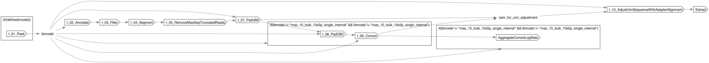

Longbow
Process
- description
- Process a BAM file using Longbow
Inputs
Required
bam(File, required): BAM file to process
Optional
barcode_allow_list(File?): File containing a list of barcodes to allowbarcode_tag(String?): Tag containing the barcodecorrected_tag(String?): Tag to use for corrected barcodemodel(String?): Longbow model to use for processingAggregateCorrectLogStats.runtime_attr_override(RuntimeAttr?)Extract.bam_pbi(File?)Extract.leading_adapter(String?)Extract.runtime_attr_override(RuntimeAttr?)Extract.start_offset(Int?)Extract.trailing_adapter(String?)t_01_Peek.runtime_attr_override(RuntimeAttr?)t_02_Annotate.runtime_attr_override(RuntimeAttr?)t_03_Filter.bam_pbi(File?)t_03_Filter.model(String?): Longbow model to use for processingt_03_Filter.runtime_attr_override(RuntimeAttr?)t_04_Segment.model(String?): Longbow model to use for processingt_04_Segment.runtime_attr_override(RuntimeAttr?)t_05_RemoveMasSeqTruncatedReads.runtime_attr_override(RuntimeAttr?)t_07_PadUMI.runtime_attr_override(RuntimeAttr?)t_08_PadCBC.runtime_attr_override(RuntimeAttr?)t_09_Correct.barcode_freq_list(File?)t_09_Correct.runtime_attr_override(RuntimeAttr?)t_10_AdjustUmiSequenceWithAdapterAlignment.runtime_attr_override(RuntimeAttr?)
Defaults
prefix(String, default="out"): Prefix for output filessame_barcode_per_read(Boolean, default=false): Whether to assume that all reads in a pair have the same barcodeshard_width(Int, default=25): Width of shards to use for processingExtract.base_padding(Int, default=2)Extract.num_cpus(Int, default=2)t_01_Peek.n(Int, default=100)t_02_Annotate.num_cpus(Int, default=8)t_03_Filter.num_cpus(Int, default=2)t_04_Segment.num_cpus(Int, default=2)t_07_PadUMI.padding(Int, default=2)t_08_PadCBC.padding(Int, default=2)t_09_Correct.ccs_lev_dist_threshold(Int, default=2)t_09_Correct.clr_lev_dist_threshold(Int, default=2)t_10_AdjustUmiSequenceWithAdapterAlignment.existing_umi_tag(String, default="ZU")t_10_AdjustUmiSequenceWithAdapterAlignment.new_umi_tag(String, default="JX")
Outputs
annotated_bam(File)segmented_bam(File)filtered_bam(File)filter_failed_bam(File)corrected_bam(File?)uncorrectable_bam(File?)extracted_bam(File)correct_stats(File?)correct_log(File?)umi_adjustment_log(File)
Dot Diagram
